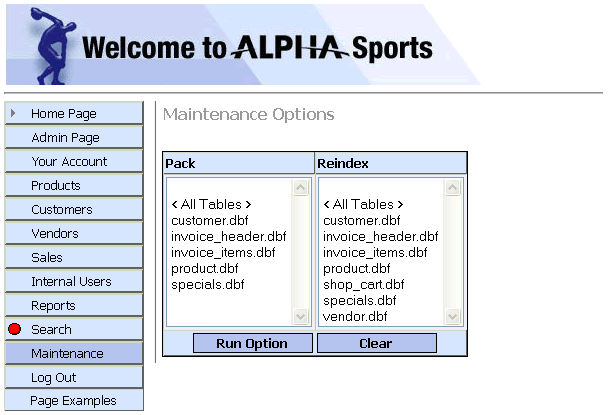

ASWPACKREINDEX.A5W
Purpose
The application administrator uses the ASWPACKREINDEX.A5W page to select various file maintenance actions.
Description
The ASWPACKREINDEX.A5W page contains the DLG_MAINTDLG_MAINTOPT Dialog Component maintenance component.
Links
The ASWPACKREINDEX.A5W page is opened if Pack or reindex is selected from the ASWMAINT.A5W page.

ASWPACKREINDEX.A5W in the WYSIWYG tab of the HTML Editor

ASWPACKREINDEX.A5W in the Browser
Edits to the Page Source
When you look at ASWPACKREINDEX.A5W with the Source tab of the HTML Editor, you will see a large amount of HTML and Xbasic code. The HTML Editor placed almost all of it there automatically, as we used the WYSIWYG tab to place the tables, text, graphics, and components on the page. There are a few interesting exceptions, where we changed the page code through the Source tab.
This code in the override section of the navigation component. The location = "Maintenance" statement highlights the "Maintenance" button in the menu.
|
with tmpl_nav_int location = "Maintenance" componentName = "nav_int" end with |
The A5W_INCLUDE() statement is in the top row of the table. It loads TOPPAGE.A5W and displays a standard page header.
|
<table cellSpacing=0 cellPadding=0 width="800" border=0> <tr> <td colspan="2"> <%a5 a5w_include("toppage.a5w") %> </td> </tr> |
Page Security Information
Login Required
Groups Allowed > Administrators
See Also